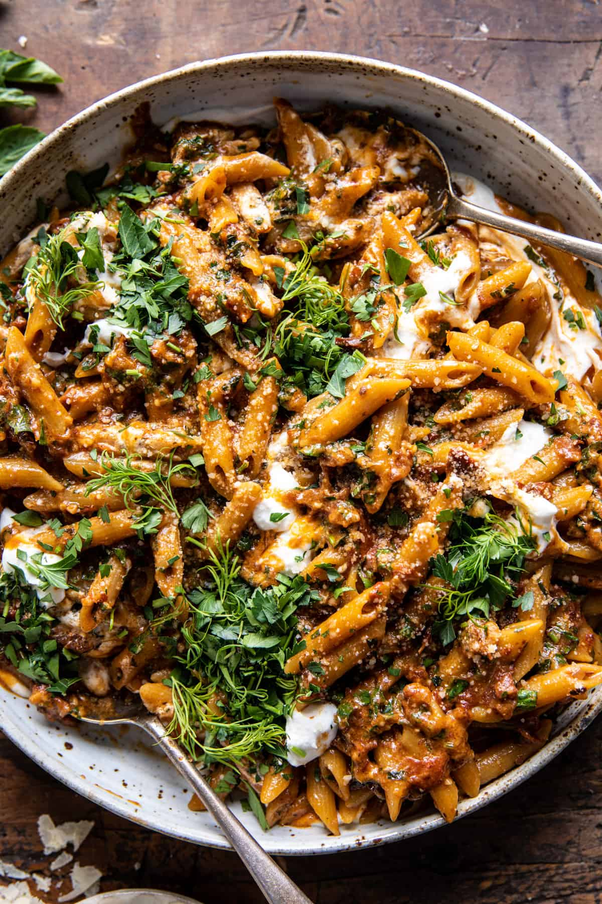

One Pot Sun-Dried Tomato Pasta with Whipped Ricotta

Description
Sometimes, you need a one pot recipe. One pot, one thing to clean. That's
my favoite kind of meal to prepare.
This recipe is comforting, easy, perfect for a weeknight meal. Who doesn't
want a big bowl of pasta after a long day?
I also like to serve this recipe with a big salad with arugula...and a
glass of wine.
Ingredients
- 1 jar (8 ounce) oil-packed sun-dried tomatoes
- 2 small shallots, sliced
- 4 cloves garlic, chopped
- 1 1/2 teaspoon spanish or smoked paprika
- red pepper flakes
- kosher salt and black pepper
- 1 pound short cut pasta (I used penne)
- 1 cup whole milk ricotta cheese
- 2 tablespoons lemon juice (fresh)
- 1 cup grated parmesan cheese
- 2 tablespoons salted butter
- 1/3 cup chopped fresh basil
- 1/3 cup chopped fresh parsley
- 2 tablespoons chopped fresh dill (optional)
Steps
-
Drain the oil from the sun-dried tomato jar into a large pot or skillet
with sides. Chop the sun-dried tomatoes.
-
Set the pot over medium-high heat. Add the shallots and garlic, cook
until fragrant, 2 minutes. Stir in the sun-dried tomatoes, paprika, and
a pinch each of red pepper flakes, salt, and pepper. Cook until the
tomatoes turn deep red and are crisping, 3-5 minutes. Add 3 1/2 cups
water. Bring to a boil, add the pasta, and cook, stirring often, until
the pasta is al dente, 8 minutes.
-
Meanwhile, whip the ricotta and lemon in a food processor until creamy.
Season with salt.
-
To the pasta, stir in in the parmesan and butter until very creamy.
Remove from the heat and stir in the basil, parsley, and dill (if
using).
-
Swirl the ricotta into a large pasta bowl or individual bowls. Add the
hot pasta and lightly toss with the ricotta. Top each bowl with
additional herbs and parmesan.
Recipe source: Halfbakedharvest